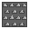

Dókano is a 2D multiplayer game, centered around laying traps and being the last player standing. Players move around a game board in real time, dropping a variety of invisible traps as a timer ticks down. Once the timer reaches zero, all the traps are revealed and any players unfortunate enough to be caught inside one get eliminated from the match. The last player remaining is the winner! Dókano is built using the Unity Game Engine.
You can play the game in one of two ways. Either download it on an android device or as a PC game on your desktop. Links to both downloads can be found below.
Download for Android
Download for Windows
Download for MAC
Download for Linux
Instructions for playing:
Currently, our game has four available lobbies, which can each support four people playing the game with each other at the same time. This means 16 people can be playing four separate games simultaneously. In order to make sure that everyone who wants to is able to get a turn to play, we kindly request for you to first join our Zoom meeting, where we will give you instructions for which lobby to join.
Controls:
Keyboard Controls (PC):
W - move player up
S - move player down
A - Move player left
D - Move player right
Space - Lay a trap
L and H - Cycle between the available traps in your inventory
Android Controls:
Arrow buttons - Move player
Lay trap button - Lay a trap
Scroll buttons - Cycle between the available traps in your inventory
1) Before joining a lobby, be sure to select a character and give yourself a username.
2) Four players join a lobby, and each press the ready button.
3) When all players have pressed ready, the start game button becomes available. One of the players should press this (it doesn’t matter who).
4) The game will then begin. Each of the players will spawn at a seperate corner of the map, and a 3 second countdown will begin.
5) When the 3 second countdown ends, the first round is underway. Players can move around the map for 15 seconds, picking up any collectable traps which spawn on the map (don’t worry, picking these up won’t kill your player). You can then lay these traps for other players to step on. While the timer is still counting down, nobody will be affected by the traps which have been laid. These collectable traps include:
 Hermes (this will protect your player from traps for one round, and enable you to fly over holes)
Hermes (this will protect your player from traps for one round, and enable you to fly over holes)
 Poseidon (if a player is standing on this at the end of the round, they will be pushed in a random direction)
Poseidon (if a player is standing on this at the end of the round, they will be pushed in a random direction)
 Fire (if a player is standing on this at the end of the round, they will burn to death)
Fire (if a player is standing on this at the end of the round, they will burn to death)
 Spike (if a player is standing on this at the end of the round, they will be impaled and die)
 Zeus (if a player is standing on this at the end of the round, they will be struck by lightning and die)
Zeus (if a player is standing on this at the end of the round, they will be struck by lightning and die)
 Hades (if a player is standing on this at the end of the round, they will be dragged to hell and suffer a fate worse than death)
Hades (if a player is standing on this at the end of the round, they will be dragged to hell and suffer a fate worse than death)
6) When the timer has reached zero, the first round ends. Players are now frozen to the spot. If they are standing on a trap which somebody has laid, this trap will then become active. If there are traps which nobody is standing on, these will roll over to the next round.
7) Any players which survived the first round will then go on to round two. This works in the exact same way. When only one or zero players are left, the game ends.
Some important things to note:
— If you do not move for a whole round, your player will be eliminated from the game.
— When you lay a trap, you are the only person who can see this animation, which means you’re the only one who knows where that trap is. Remember though, you can still be killed by the traps which you place yourself!